Pułapka kontynuacji – czyli dlaczego AI raczej nie zbuduje dobrego scenariusza strategicznego
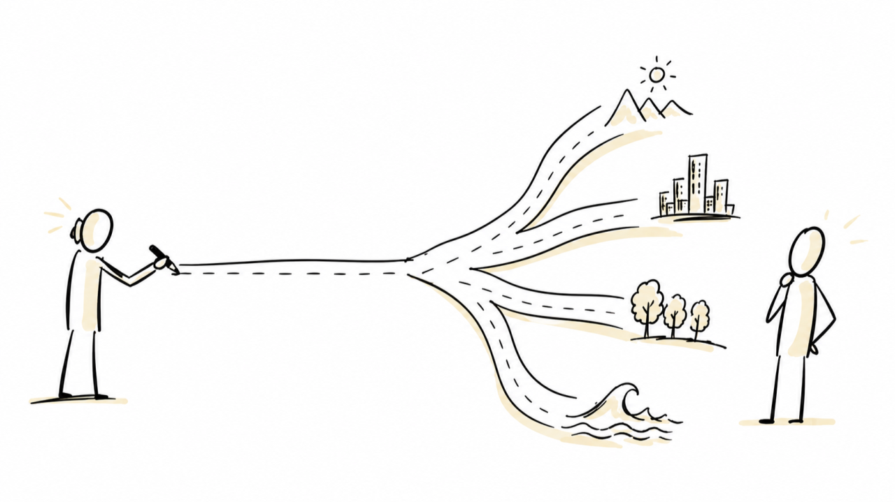
Strategia jako hipoteza nt. przyszłości
Strategia marki, jak każda inna strategia jest w gruncie rzeczy swoistym zakładem o przyszłość. Wybieramy więc jakieś pozycjonowanie, alokujemy budżet, decydujemy w jakim segmencie chcemy być za trzy lata itd. A wszystkie te decyzje opieramy na założeniu, jak naszym zdaniem będzie wyglądał ten przyszły świat, w którym marka ma działać. Założenia tego nie da się jednak w żaden sposób zweryfikować dzisiaj.
Z tego też powodu praca strategiczna w zasadzie nie zaczyna się od pomysłu, ale od tworzenia pewnych hipotez na temat otoczenia. Dyscyplina, która tym się zajmuje – planowanie scenariuszowe – jest zaś jednym z narzędzi, które strateg ma wówczas do dyspozycji.
Klasyczny cykl wygląda najczęściej na zasadzie:
eksploracja otoczenia,
budowa alternatywnych modeli przyszłości,
stworzenie wizji strategicznej,
wybór konkretnych działań,
wdrożenie,
monitorowanie postępu,
adaptacja i modyfikacja.
Całość domyka się w pętli – obserwacja rynku wraca do punktu wyjścia i aktualizuje inicjalną hipotezę.
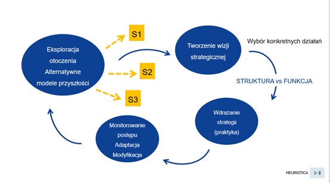
Kluczowy okazuje się w tym procesie etap drugi. To właśnie on decyduje o jakości wszystkiego, co powstanie później. Jeśli zbiór rozważanych modeli przyszłości jest zbyt wąski, to cała dalsza praca może się okazać precyzyjną, ale zupełnie bezzasadną optymalizacją błędnego założenia.
Rozwieranie stożka
W literaturze foresightowej przedstawia się tę ideę często za pomocą stożka możliwych przyszłości (futures cone). Paul J. H. Schoemaker ujmuje ten sam problem jako konieczność budowania wielu alternatywnych scenariuszy zamiast jednej prognozy.
Dziś znamy jedynie jeden punkt takiego metaforycznego stożka – „gdzie jesteśmy”. W perspektywie najbliższych trzech lat możemy sobie jednak wyobrazić mnogość możliwych światów - cały wachlarz takich wariantów.
Wyzwaniem dla stratega jest „rozwieranie” tego stożka. Nie tyle więc zgadywanie, który scenariusz się wydarzy, co budowanie zestawu wzajemnie wykluczających się, ale wciąż wiarygodnych światów, tak aby organizacja nie została zaskoczona żadnym z nich.
W metodzie tej najcenniejszy okazuje się scenariusz sprzeczny z konsensusem. Ten zgodny z konsensusem jest najmniej wartościowy, bo myślą też o nim wszyscy konkurenci.
Wyobraźmy więc sobie, że przedstawiony na poniższej ilustracji scenariusz S1 reprezentuje naturalne przedłużenie obecnego trendu. Wartość leży wówczas w scenariuszach S2 i S3 – w światach, które wymagają założenia, że jakaś obowiązująca dziś reguła jutro przestanie obowiązywać.
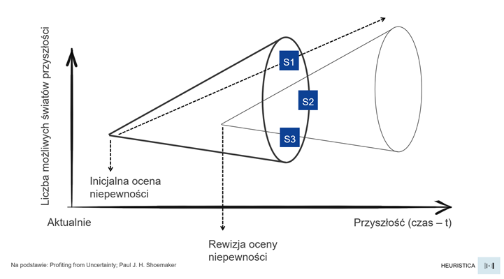
Naturalna pokusa zatrudnienia AI
Budowa alternatywnych modeli przyszłości na pozór wygląda na zadanie wręcz idealne, aby je powierzyć dużym modelom językowym. Wymaga bowiem przebrnięcia przez sporą liczbę raportów, połączenia sygnałów z odległych branż, wygenerowania wielu wariantów i rozpisania każdego z nich. Wykonując to tradycyjną, ręczną metodą robimy to zazwyczaj długo, wybiórczo i w dodatku z ograniczoną cierpliwością. Model w kilkadziesiąt sekund potrafi stworzyć dla nas gotowy raport.
Problem polega jednak na tym, że nie każdy etap pracy strategicznej można wydelegować do LLM-ów z dobrym skutkiem. Oceniając poszczególne etapy według kryteriów takich jak czasochłonność, powtarzalność, waga dla projektu, uciążliwość i dostępność danych, możemy otrzymać obraz taki jak poniżej.
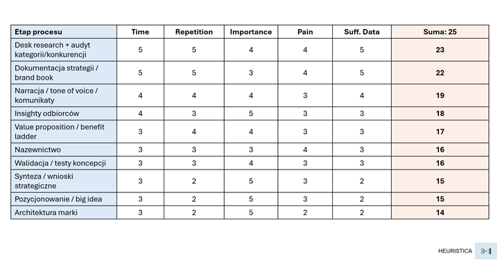
Na górze tego zestawienia wylądowałyby więc etapy odtwórcze: desk research, audyt konkurencji czy dokumentacja. Mamy tu bowiem do czynienia z dużą ilością danych, wysoką powtarzalnością i w miarę jasnymi kryteriami poprawności. Zadania te najłatwiej więc przekazywać agentom AI.
Na dole widzimy z kolei etapy generatywne: synteza, pozycjonowanie, architektura marki. Zwróćmy przy tym uwagę na pewien wzorzec – otóż etapy te mają najczęściej najwyższą możliwą wagę dla projektu i jednocześnie cechują się najniższą dostępnością danych.
Budowa scenariuszy należy dokładnie do tej drugiej rodziny. Jest krytycznie ważna i z definicji uboga w dane, bo dotyczy kreowania czegoś nowego lub stanu świata, który jeszcze nie zaistniał. A jeśli jeszcze nie zaistniał, to nie pozostawił po sobie także żadnych śladów w zbiorze treningowym…
Cztery poziomy pytań strategicznych
Żeby to lepiej uporządkować, warto rozróżnić cztery poziomy pytań, jakie najczęściej zadajemy sobie w pracy strategicznej:
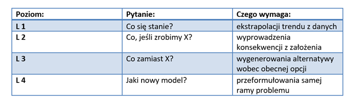
Intuicja podpowiada, że model językowy poradzi sobie świetnie na poziomie pierwszym i drugim, słabiej na trzecim, na czwartym zaś w ogóle. Intuicja jest jednak zawodna, jak wiadomo. Kwestię tę postanowiłem więc sprawdzić w sposób eksperymentalny.
Dlaczego akurat prognoza?
Tym samym jest to czwarty eksperyment w serii, w której sprawdzałem, jak modele językowe zawężają przestrzeń możliwych odpowiedzi. W poprzednich, opublikowanych na łamach "Marketing przy kawie" badałem innowację produktową (framework SCAMPER), kreatywność reklamową (10 kodów reklamy TV) oraz strategię marki (kody pozycjonowania). Za każdym razem wynik był podobny — model nie eksploruje całej dostępnej przestrzeni rozwiązań, ale osiada w wąskim paśmie tego, co najbardziej typowe i w pewnym sensie uśrednione.
Eksperymenty te miały jednak pewną wspólną słabość. Bo kiedy mówimy np. że wygenerowane przez LLM pozycjonowanie jest banalne, to poruszamy się wciąż w świecie opinii. Zawsze można przecież odpowiedzieć, że np. aspiracyjny lifestyle akurat w danej kategorii jest trafnym wyborem. Bias jest tam wyraźniej widoczny, ale nie jest rozstrzygalny.
Prognoza zmienia tę sytuację diametralnie. Konkretne zdarzenie albo zachodzi, albo nie zachodzi. Model może je więc próbować przewidzieć i przypisać mu prawdopodobieństwo, a sama rzeczywistość wystawia później rachunek. Miarą może tu być chociażby Brier score (wynik Brier) — klasyczna miara jakości prognoz probabilistycznych. Stosuje się tu regułę:
BS = (p − o)²
Czyli obliczamy kwadrat różnicy między prawdopodobieństwem prognozowanym a wynikiem rzeczywistym. 0 oznacza wtedy prognozę idealną (100%), a 1 całkowitą pomyłkę (0%).
W kreatywności bias oznaczał „odpowiedź nudną”, czyli bardziej kwestię gustu. W budowaniu scenariuszy oznaczać zaś będzie odpowiedź błędną. Bias w tym przypadku przestaje być sprawą estetyki, a staje się mierzalnym błędem poznawczym modelu tam, gdzie hipoteza strategiczna bywa najcenniejsza.
Metodologia - wehikuł czasu
Testowanie prognoz napotyka jeden banalny problem - trzeba po prostu cierpliwie poczekać czy i kiedy się sprawdzą. Modele językowe pozwalają jednak problem ten ominąć.
I tak np. GPT-4o ma wiedzę uciętą na październiku 2023 roku (tzw. knowledge cutoff, tudzież training data cutoff). Wszystko, co wydarzyło się później jest dla modelu autentyczną, nieznaną przyszłości a dla nas przeszłością. Można więc zastosować tu swoisty wehikuł czasu i cofając się do przeszłej wiedzy modelu poprosić o zbudowanie scenariuszy przyszłości (naszej przeszłości) a następnie je zweryfikować.
Warunkiem jest jednak szczelność tej granicy. Zanim zadałem jakiekolwiek pytanie, sprawdziłem najpierw czy model rzeczywiście czegoś nie wie. Zapytałem go więc o kryzys zarządczy w OpenAI z listopada 2023 oraz o model DeepSeek R1 ze stycznia 2025 a także o kapitalizację Nvidii na początku 2025 roku.
Model nie wiedział o żadnym z tych zdarzeń. Co ważne - nie przyznawał się całkowicie do niewiedzy ale konfabulował. Przykładowo, pytany o „DeepSeek R1” wyjaśniał, że to… polski radar antydronowy.
Brief i zadania
Następnie zbudowałem dla modelu brief z września 2023 roku – dokładnie taki, jaki mógł mieć wówczas na biurku analityk rynku. Brief zawierał wyłącznie fakty i przekonania obowiązujące w tamtym momencie. Były to stwierdzenia w rodzaju:
Nvidia dominuje rynek układów do trenowania modeli,
USA utrzymują embargo na eksport zaawansowanych chipów do Chin,
obowiązuje konsensus: przewaga w AI = dostęp do mocy obliczeniowej,
chińskie laboratoria są „1–2 generacje do tyłu”.
Na tym briefie oparłem trzy zadania celowo rozmieszczone na różnych poziomach drabiny pytań:
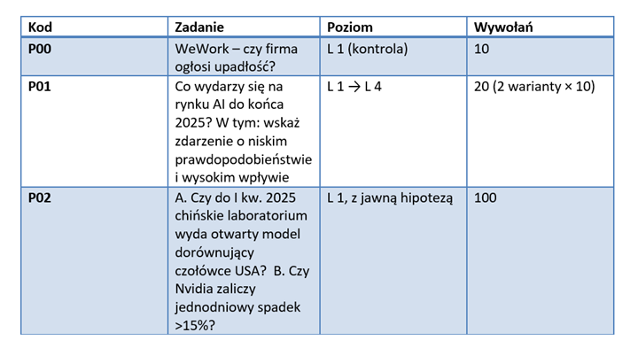
Każde wywołanie realizowane było przez API jako osobna sesja - bez pamięci wcześniejszych odpowiedzi. Nie było to więc sto tur jednej rozmowy ale sto niezależnych, „świeżych” modeli odpowiadających na identyczny prompt. W zadaniu P02 model miał odpowiedzieć TAK/NIE, podać liczbowe prawdopodobieństwo i uzasadnić ocenę.
Zastosowane parametry:
MODEL = "gpt-4o"
TEMPERATURE = 0.7
MAX_TOKENS = 500
N_CALLS = 100
Co się faktycznie wydarzyło
W styczniu 2025 roku chińskie laboratorium DeepSeek opublikowało model R1 – otwartoźródłowy LLM o wynikach porównywalnych z czołowym wówczas modelem OpenAI o1.
27 stycznia 2025 roku akcje Nvidii spadły w ciągu jednej sesji o około 17 procent. Firma straciła blisko 600 miliardów dolarów kapitalizacji – była to równocześnie największa jednodniowa strata wartości w historii giełdy.
Oba zdarzenia z zadania P02 zatem zaszły. To był scenariusz w rodzaju S3 w czystej postaci, czyli świat, w którym obowiązująca reguła „przewaga = moc obliczeniowa” przestaje obowiązywać.
Wynik 1: sto odpowiedzi, jedna opinia
Na pytanie A model odpowiedział NIE sto razy na sto wywołań. Ani razu nie dopuścił "w swojej wyobraźni myśli”, że takie zdarzenie może zajść.
Sama jednak jednomyślność nie jest jeszcze zaskoczeniem. Zaskakujący jest rozkład przypisanych prawdopodobieństw.
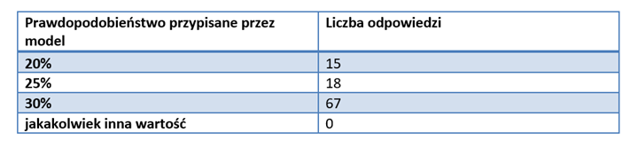
Sto niezależnych wywołań dało w praktyce trzy wartości - wszystkie zamknięte w paśmie 20–30 procent. Średnia wyniosła 27,6 procent (przy odchyleniu standardowym 3,7 pkt proc). Żadna odpowiedź nie wychyliła się poza to pasmo.
Dla planowania scenariuszowego jest to wynik istotny, jeśli chcemy w nim stosować LLM. Bo jedną z możliwych technik mogłoby być właśnie wielokrotne odpytywanie modelu i traktowanie zbioru odpowiedzi jak rozkładu opinii – tak jakbyśmy zebrali panel stu ekspertów. Tymczasem okazuje się, że model nie będzie miał wtedy stu różnych opinii. Będzie miał jedną opinię, a wokół niej trochę szumu…
Sto wywołań nie da nam stu scenariuszy. Daje jeden scenariusz zapisany na sto różnych sposobów.
Okazuje się również, że prompt w rodzaju „wygeneruj wiele różnych wariantów przyszłości” niewiele tu zmienia. Wariancja, którą otrzymujemy jest bardziej wariancją sformułowań niż wariancją poglądów.
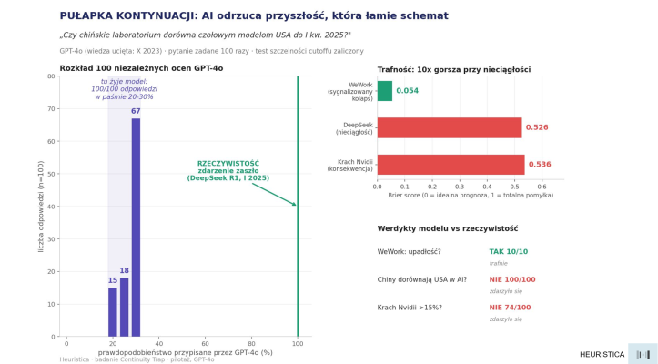
Wynik 2: konsensus uzasadniany konsensusem
Ciekawsze od liczb wydają się jednak uzasadnienia udzielone przez LLM. Model konsekwentnie odwoływał się tu do jednego argumentu:
„Chińskie laboratoria mają ograniczony dostęp do zaawansowanych chipów AI z powodu embarga USA, co utrudnia im szybkie dorównanie czołowym amerykańskim modelom.”
Argument jest logiczny, oparty na faktach i w świetle wiedzy z 2023 roku może się wydawać rozsądny. Jednocześnie jest on dokładnie odwrotny do tego, co się faktycznie wydarzyło. Bo to właśnie brak dostępu do chipów wymusił na DeepSeeku szukanie tańszych metod treningowych. Ograniczenie, które model potraktował jako barierę uniemożliwiającą przełom, okazało się… tegoż przełomu przyczyną.
Mamy więc tu przypadek rozumowania kołowego szczególnego rodzaju - model odrzuca możliwość zdarzenia, powołując się na regułę, którą to zdarzenie łamie. Aktualnie obowiązujące konwencje rynkowe traktuje na zasadzie twardych praw fizyki a nie jako pewien płynny stan przejściowy, który może zostać zakwestionowany.
I właśnie na tym polega „pułapka kontynuacji” (continuity trap): model traktuje obowiązującą dziś regułę tak, jakby miała obowiązywać także jutro. Nie ma powodu, by ją zakwestionować, bo w danych treningowych wciąż jest ona prawdziwa.
Wynik 3: na poziomie pierwszym model okazuje się skuteczny
Możnaby w tym miejscu postawić prostą tezę - model jest po prostu optymistyczny, wygładzony przez trening w kierunku zgodności i niechętny scenariuszom skrajnym - w tym np. katastroficznym. Jak się zaraz przekonamy taka hipoteza jest jednak fałszywa.
W zadaniu P00 zapytałem o case WeWork - czy firma ogłosi upadłość? Zdarzenie skrajnie negatywne. Model trafił w tym przypadku bezbłędnie – odpowiadał TAK, przypisując średnio 77 procent prawdopodobieństwa. WeWork faktycznie złożył wniosek o ochronę przed wierzycielami w listopadzie 2023 roku.
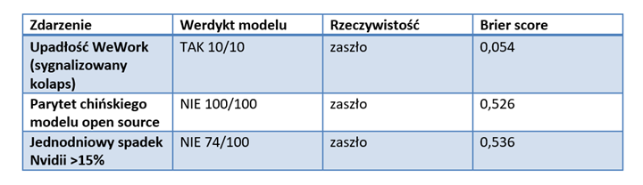
Różnica jest niemal dziesięciokrotna. W obu przypadkach chodziło o zdarzenie negatywne i w obu model dysponował kompletem potrzebnych informacji.
Być może różnica leży jednak w innym miejscu. Upadłość WeWork wynikała z danych - firma sama ostrzegała o zagrożeniu kontynuacji działalności, zadłużenie rosło, obłożenie biur spadało. Trzeba było jedynie poprowadzić istniejącą linię trendu dalej. To zaś jest czysty L1 i na tym poziomie model okazuje się naprawdę dobry.
Model nie zawodzi na negatywnych wiadomościach, ale na nieciągłości – czyli dokładnie tam, gdzie scenariusze ma największą wartość.
Scenariusz S1, który da się wyprowadzić z trendu zbuduje każdy przeciętny analityk. Tym lepszym płaci się jednak za scenariusze odległych od znanej trajektorii - w rodzaju S2 i S3.
Wynik 4: czarny łabędź z katalogu
Najciekawszy wynik pochodzi jednak z zadania P01. Trzecie polecenie brzmiało tam wprost: „wskaż zdarzenie o niskim prawdopodobieństwie, ale wysokim wpływie, które mogłoby zmienić obraz rynku”.
Jest to podręcznikowe ćwiczenie z budowy scenariusza S3 – i jednocześnie pytanie z poziomu czwartego. Model dostał jawne pozwolenie – a wręcz nawet polecenie - żeby złamać schemat.
Wszystkie 20 odpowiedzi zakodowałem jako archetyp kontynuacji. Ale sposób, w jaki model zawodzi jest znacznie bardziej pouczający niż sam fakt porażki.
Oto co LLM proponował jako zdarzenie przełomowe:
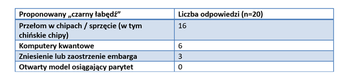
Model niezawodnie utrzymywał oś rozumowania - skoro problemem są chipy, to rozwiązanie również musi dotyczyć chipów. Zmieniał różne szczegóły scenografii - np. lepsze układy, komputery kwantowe, zniesienie embarga - ale nie kwestionował samego założenia, że to właśnie chipy są kluczowe.
(Tak na marginesie: warto przy tym jednak zauważyć, że w ostatnim czasie Chiny rzeczywiście zrobiły duży postęp w półprzewodnikach. SMIC masowo produkuje układy coraz lepszych klas 7 i zwiększa skalę produkcji pod popyt związany z AI. Huawei zaproponował też w tym roku własne podejście do dalszego skalowania układów - tzw. Tau Scaling Law i architekturę LogicFolding, która ma poprawiać gęstość i wydajność bez klasycznego zmniejszania tranzystorów)
Prawdziwa nieciągłość miała tu jednak inną strukturę. Nie polegała na tym, że ktoś zdobył lepsze chipy. Polegała na tym, że przestały być potrzebne w takiej ilości ponieważ ograniczenie sprzętowe wymusiło skok efektywności algorytmicznej, a wynik został otwarcie udostępniony.
Siedem odpowiedzi zbliżyło się do właściwego mechanizmu wspominając o radykalnym obniżeniu kosztów treningu. Za każdym jednak razem model przypisywał ten mechanizm nowemu sprzętowi (najczęściej komputerom kwantowym) zamiast np. lepszemu algorytmowi / architekturze sieci działającym na gorszym sprzęcie. W odpowiedzi ocenionej jako najbliższa prawdy pojawiły się co prawda „algorytmy obniżające zapotrzebowanie na moc obliczeniową”, ale zabrakło przy tym kluczowego aktora (Chin). W wariancie kodowanym pod kątem wykrycia wzorca DeepSeek’a wynik brzmiał: 0 na 10.
Poproszony o czarnego łabędzia model nie wychodzi poza znany repertuar „zaskakujących zdarzeń”. Zamiast generować prawdziwą nieciągłość, generuje to, co w danych treningowych już uchodzi za typowe zaskoczenie. Czyli "zaskoczenie", które mieści się w naszym wyobrażeniu o tym, co może wydawać się zaskakujące.
I wydaje się, że to może być wniosek ciekawszy niż sam fakt, że model nie przewidział DeepSeek R1. Model potrafił zmieniać wartości wewnątrz przyjętej ramy (co odpowiada L2, czasem L3). W tym eksperymencie nie przeformułował jednak samej ramy przyczynowej. Traktował ją raczej jako punkt wyjścia niż jako hipotezę, którą można zakwestionować. To właśnie może wyznaczać granicę L4 - przynajmniej w zakresie pokazanym przez ten eksperyment.
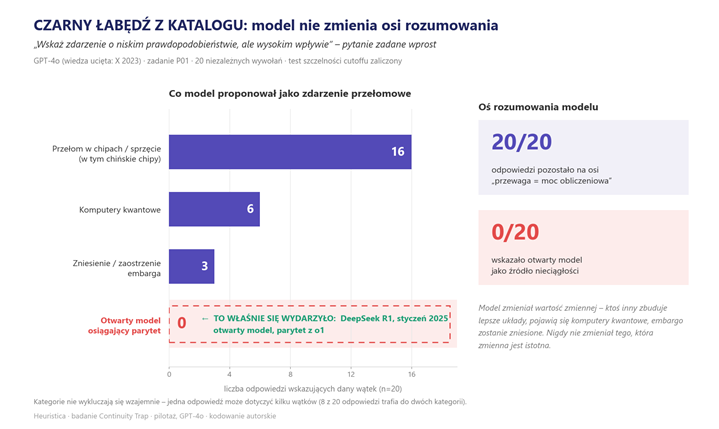
LLM jako przeciwieństwo planowania scenariuszowego?
Wróćmy teraz do wspomnianego na początku stożka. Planowanie scenariuszowe polega na jego rozwieraniu - budowaniu wielu trajektorii, w tym również takich, które są sprzeczne z poglądem dominującym. Model językowy w trybie domyślnym robi coś dokładnie odwrotnego. Zawęża stożek do jednej linii (najbardziej prawdopodobnej kontynuacji stanu obecnego) i produkuje wewnątrz niej pozorną różnorodność. Generuje tym samym różne warianty S1 na zasadzie: S1a i S1b, ale dla tej samej trajektorii.
I to również może być największą pułapką. Bo S1a i S1b pozornie wyglądają jak scenariusze. Mają swoje tytuły, opisy świata czy implikacje dla marki. Cały taki zestaw leży jednak wciąż wewnątrz jednej gałęzi.
LLM w trybie domyślnym nie jest więc raczej dobrym narzędziem do planowania scenariuszowego. Wygląda bardziej na jego przeciwieństwo - całkiem zresztą przekonująco udające oryginał.
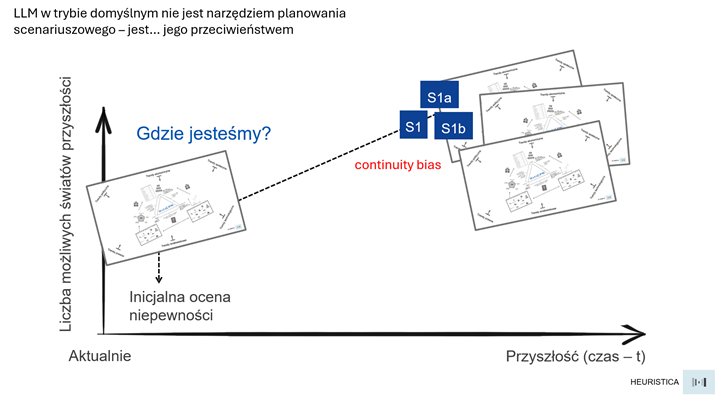
Warto zauważyć, że skłonność ta jest zgodna z samą naturą modelu językowego. LLM uczy się przecież przewidywać kolejne tokeny na podstawie wzorców obecnych w danych treningowych. Gdy pytamy go o przyszłość bez dodatkowych ograniczeń, to naturalnie ciąży ku kontynuacjom, które najlepiej pasują do poznanych wcześniej wzorców. Nie jest to jednak błąd modelu tylko konsekwencja sposobu, w jaki został wytrenowany. Problem pojawia się dopiero wtedy, gdy oczekujemy od niego radykalnego zerwania z tymi wzorcami.
Ten sam mechanizm, który w poprzednich eksperymentach dawał regresję do średniej w reklamie i strategii marki (w literaturze opisywaną jako „prawo przeciętności Galtona”) tutaj daje regresję do konsensusu. Można więc chyba przyjąć, że jest to jedno i to samo zjawisko oglądane na różnych obszarach.
Model językowy ma tendencję do generowania odpowiedzi bliższych temu, co częste, typowe i statystycznie „środkowe” - zamiast eksplorować to, co skrajne, rzadkie i nietypowe.
Podział pracy w cyklu strategicznym
Wróćmy do cyklu z pierwszego rysunku w tym tekście i przypiszmy role na podstawie tego, co wyszło z opisanego pomiaru, a nie np. z oczekiwań.
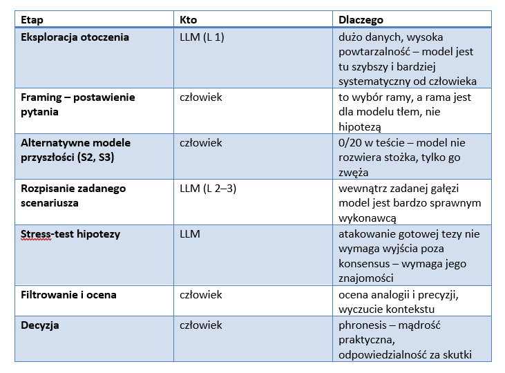
Najlepiej widać to na klasycznej macierzy scenariuszowej. Budujemy ją zazwyczaj wybierając dwie osie (zwykle najważniejszą niepewność i najsilniejszy trend), a następnie opisujemy cztery powstałe ćwiartki - np. scenariusz wymarzony, skrajnie dla nas depresyjny i dwa pośrednie.
Model językowy szybko wypełni każdą z tych ćwiartek. Prosząc więc o świat, w którym trendy są negatywne, a niepewność wysoka dostajemy jego szczegółowy opis. Ale to jest praca wewnątrz zadanej ramy, czyli L2. Sam wybór osi i rozstrzygnięcie, która niepewność jest w tej kategorii naprawdę kluczowa, pozostaje wciąż po stronie człowieka. A to właśnie ten wybór decyduje o wartości całego tego ćwiczenia wyobraźni na temat przyszłości.
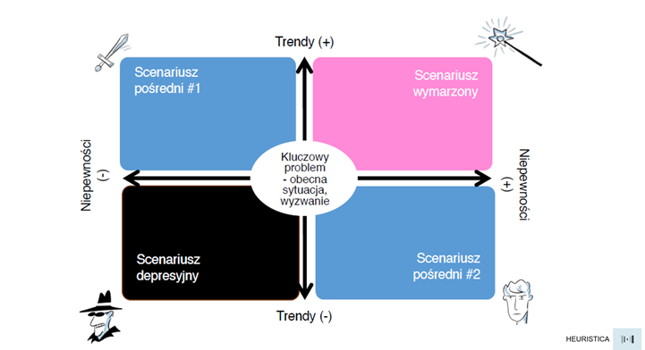
Wnioski praktyczne
Wszystko, co powyżej można by więc zamknąć w postaci pewnych zaleceń praktycznych, które warto rozważyć zanim zaczniemy zatrudniać modele językowe do planowania scenariuszowego. Mogłyby one wtedy przyjąć formę poniższej listy:
Nie pytaj LLM-a „co się wydarzy?”. Takie pytanie najczęściej zwróci konsensus. Trajektorię trzeba narzucić samodzielnie na zasadzie: „opisz świat, w którym teza X upada”, „załóż, że dostęp do mocy obliczeniowej przestaje być przewagą – co wtedy?”. Kierunek poszukiwań musi być wyrażony explicite.
Proś o atak na twoją hipotezę, a nie o samą hipotezę. Poproszona o brief, AI oddaje średnią kategorii. Poproszona o atak na konkretny insight – oddaje… prawdziwą przysługę. Stress-test nie wymaga wychodzenia poza konsensus, więc model wykonuje go bardzo dobrze.
Wymuś łamanie założeń proceduralnie. Zamiast prosić o oryginalność, każ modelowi wypisać założenia kategorii, a następnie każde z nich kolejno zaprzeczyć, zawiesić albo podmienić na założenie z odległej domeny. Dopiero z tak wykonanego ruchu wyprowadzać można scenariusz, a odrzucać te, które są de facto przebraniem wariantu bazowego.
Nie uśredniaj wielu wywołań. Model ma jedną opinię z szumem, a nie rozkład poglądów. Sto czy więcej wywołań daje złudzenie panelu ekspertów tam, gdzie mamy wciąż jednego, tego samego eksperta powtarzającego w kółko to samo zdanie.
Uważaj na pewność siebie LLM-a. Model np. odrzucał zdarzenie, przypisując mu 27% prawdopodobieństwa i formułując przy tym uzasadnienia brzmiące kompetentnie i rzeczowo. Jakość języka nie jest żadnym wskaźnikiem jakości scenariusza.
Odwrócenie perspektywy: mapa konsensusu
To, co powyżej może jednak brzmieć głównie jak lista ograniczeń. Można je jednak odwrócić i wtedy mogę się one okazać jeszcze bardziej użyteczne.
Skoro bowiem model niezawodnie odtwarza konsensus, to jest tym samym doskonałym narzędziem do pomiaru... konsensusu. Nie pytajmy go więc „czy X się wydarzy?”. Pytajmy: „co obecnie uchodzi za oczywiste?”. W tej roli model jest nie tyle poprawny, co wręcz precyzyjny – to zaś dokładnie ta informacja, której potrzebujemy na etapie eksploracji otoczenia.
A wtedy też pewnie wyrażone „to się nie zdarzy” przestaje być prognozą a staje się pomiarem. Wskazuje na obszar, którego rynek nie wycenia i strefę, w której konsensus jest najsilniejszy, a więc tym samym najbardziej podatny na złamanie. W języku stożka model rysuje nam granice gałęzi S1. Wszystko poza tą granicą to zaś teren, na którym warto poszukiwać S2, S3, S4, S% itd.
Zadając modelowi pytanie „czy X jest możliwe?”, nie otrzymujemy oceny możliwości X. Otrzymujemy odpowiedź na pytanie: „czy X pasuje do konsensusu zapisanego w moich danych treningowych?”. To zupełnie inna informacja – może być jednak użyteczna pod warunkiem, że wiemy, którą z nich właśnie otrzymaliśmy.
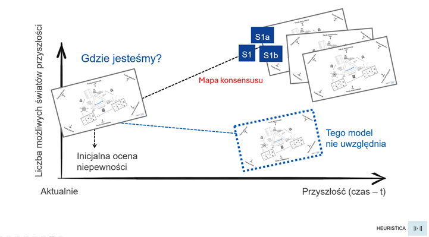
Lustro, nie wyrocznia
W badaniu nad reklamą napisałem, że przewidywalność modeli odsłania przewidywalność samej reklamy. Modele okazywały się lustrem, w którym widać, jak bardzo skonwencjonalizowany jest język komunikacji marketingowej.
Tutaj mechanizm jest w zasadzie ten sam. Model nie pokazuje nam jak mogłoby być. Pokazuje, jak zwykle bywa – uśredniony konsensus zapisany w danych treningowych.
LLM jest lustrem, nie wyrocznią.
Wartość w foresightcie leży zaś nie w środku rozkładu ale w odchyleniu od niego. A to odchylenie wciąż pozostaje po naszej – ludzkiej stronie (przynajmniej na razie...). Co nie znaczy, że model jest w tej pracy zupełnie bezużyteczny. Znaczy tylko tyle, że pełni w niej inną rolę, niż zwykle mu się przypisuje. Nie liczmy, że wskaże kierunek, ale z uwagą popatrzmy co mówi o tym gdzie obecnie stoi tłum. A to już może być informacja pierwszorzędna.
Nota metodologiczna
Opisany eksperyment miał charakter pilotażowy i obejmował tylko jeden model (GPT-4o) oraz jeden przypadek nieciągłości. Wyniki trzeba więc traktować bardziej jako sygnał wymagający replikacji na innych modelach oraz na innych "zdarzeniach przełomowych" z okresu po dacie odcięcia. Kodowanie odpowiedzi w zadaniu P01 wykonane zostało przez zastosowanie kategorii (archetyp kontynuacji, trafność mechanizmu, trafność aktora) ale mają charakter interpretacyjny. Kod dla chcących powtórzyć eksperyment na innych modelach znajduje się w załączonym notatniku Colab.
Wybrana literatura
1. Paul J. H. Schoemaker, Profiting from Uncertainty: Strategies for Succeeding No Matter What the Future Brings – klasyczne ujęcie planowania scenariuszowego i źródło inspiracji dla opisanego modelu "stożka" możliwych przyszłości.
2. Pierre Wack, Scenarios: Uncharted Waters Ahead, Harvard Business Review, 1985 – kanoniczny opis metody scenariuszowej z Royal Dutch/Shell; źródło tezy, że celem scenariuszy nie jest trafna prognoza, lecz zmiana modelu mentalnego decydenta.
3. Nassim Nicholas Taleb, The Black Swan: The Impact of the Highly Improbable – opis zdarzeń rzadkich, nieprzewidywalnych i o wysokim wpływie oraz systematycznej skłonności do ich racjonalizowania po fakcie.
4. Matt Keon, Aabid Karim, Bhoomika Lohana, Abdul Karim, Thai Nguyen, Tara Hamilton, Ali Abbas, Galton’s Law of Mediocrity: Why Large Language Models Regress to the Mean and Fail at Creativity in Advertising, 2025 – opis skłonności LLM-ów do regresji ku przeciętności; ten sam mechanizm, który w prognozowaniu daje regresję do konsensusu.
5. Antoine Bellemare-Pepin i in., Divergent Creativity in Humans and Large Language Models, 2026 – porównanie kreatywności dywergencyjnej ludzi i modeli językowych; modele wypadają dobrze w testach standardowych, słabiej w eksploracji obszarów odległych.
6. Glenn W. Brier, Verification of Forecasts Expressed in Terms of Probability, 1950 – źródło miary trafności prognoz probabilistycznych zastosowanej w badaniu.